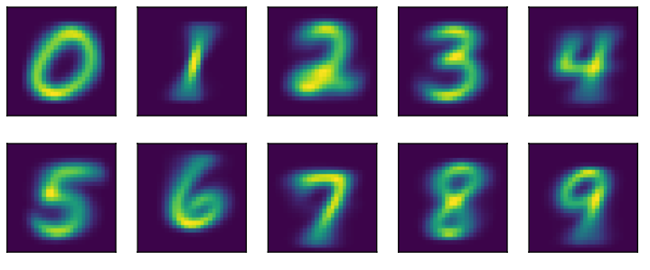
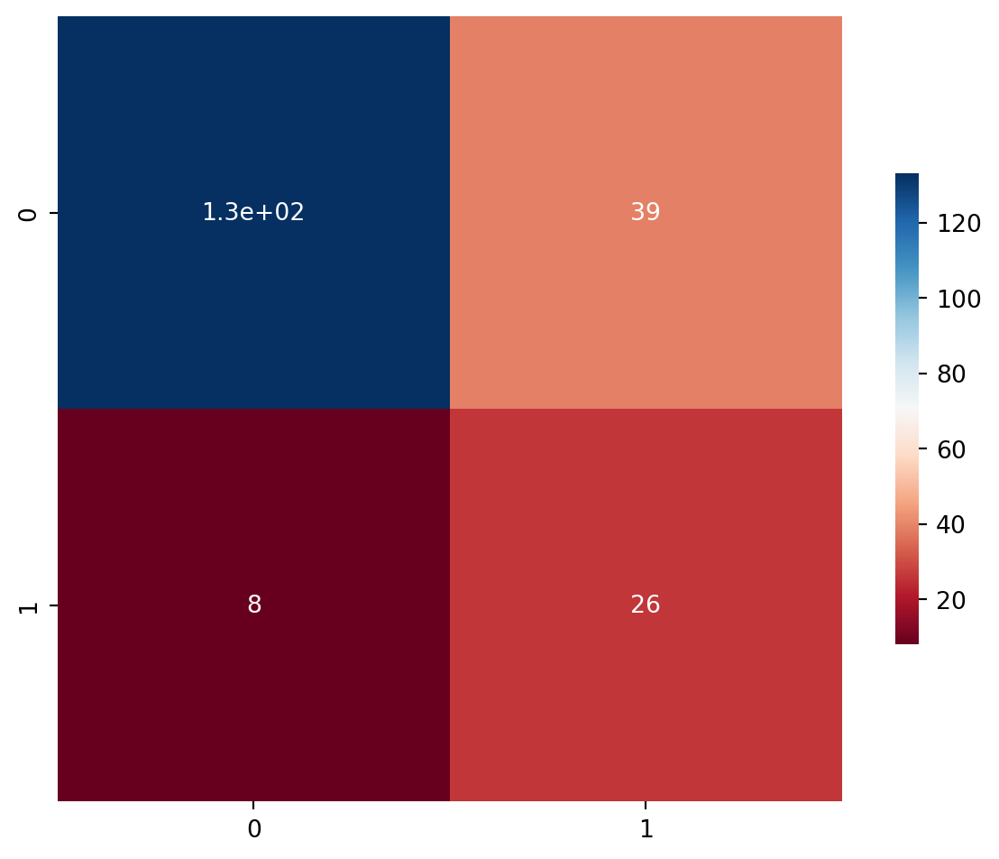
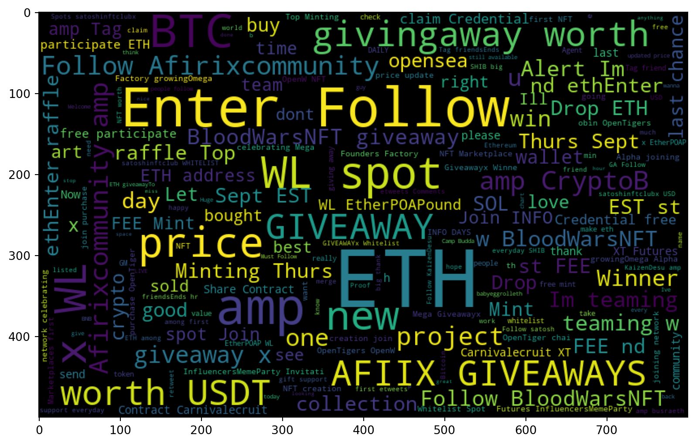
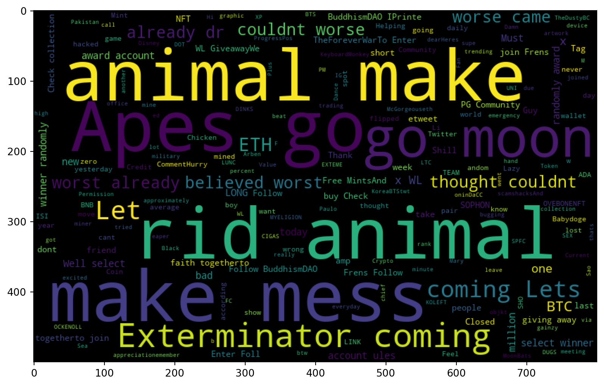
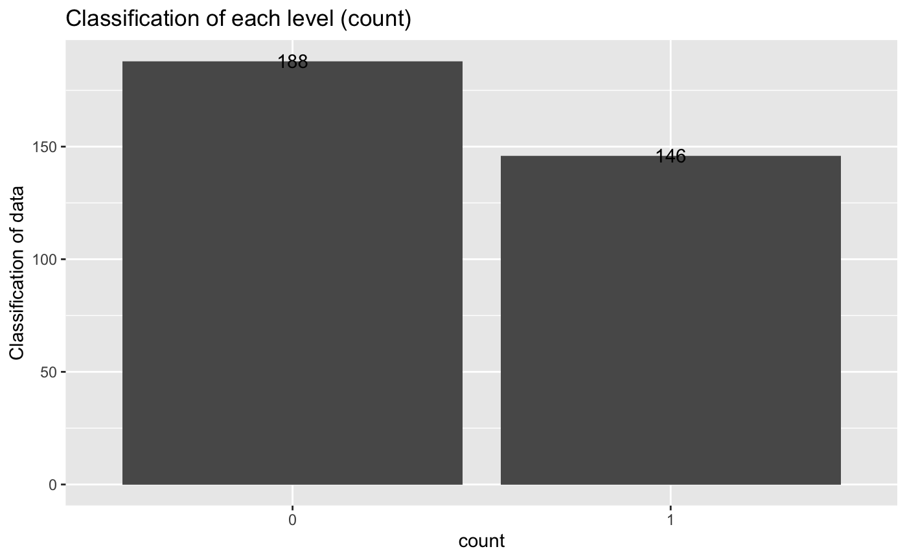
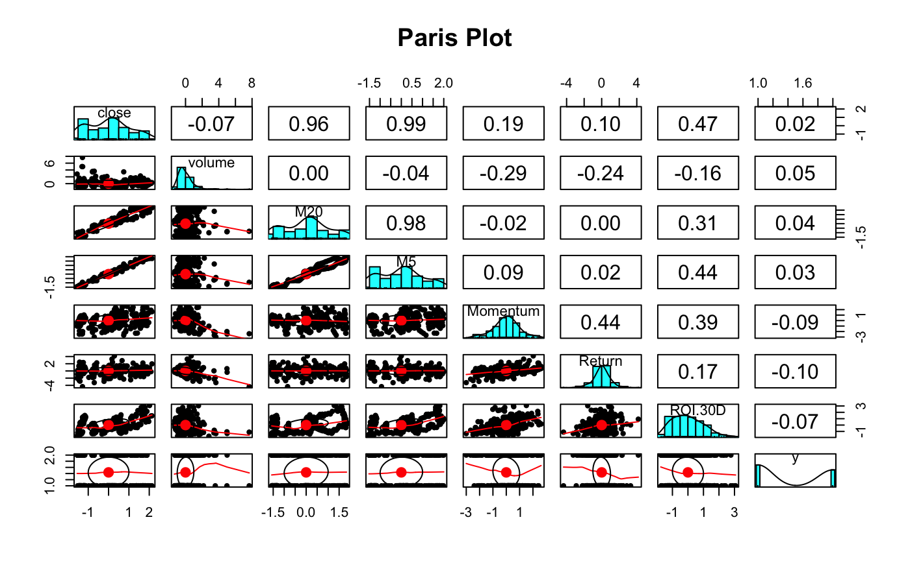

Naive Bayes
Picture from DIVE INTO DEEP LEARING
Text Data: Naive-Bayes Python:
Context
It is important for sentiment analysis of tweets. Text data is unstructured data. Unlike structured data, People cannot immediately get preliminary information from unstructured data. Sentiment analysis of tweets can be used to initially determine the user’s evaluation of a particular thing.
Sentiment analysis, sometimes referred to as opinion mining, is a technique used in natural language processing (NLP) to determine if data is positive, negative, or neutral. Sentiment analysis on text data is popular among companies to monitor how their brands and products are perceived by consumers through online reviews and to better understand their target market and target population.
Sentiment analysis is first performed on clean data. By using textblob package to analyze each twitter. And remove all unnecessary data such as emoticons, punctuation, etc. The stopwords are also removed. Data tokenization is also conducted. The number of token occurrences in each document is counted. The figure below shows the distribution of positive and negative words.
Code and Methodology
Code
#sns.countplot(tweets_df['attitude'],label='Count').set(title='Attitude histogram')
import plotly
plotly.offline.init_notebook_mode(connected=True)
import plotly.express as px
names =['Positive Attitude', 'Negetive Attitude']
random_x=[885,143]
fig = px.pie(values=random_x, names=names,title='Attitude of Twitter Text Data')
fig.show()The figure-1 shows that the majority of tweets have a positive attitude towards cryptocurrencies, even though the overall price of cryptocurrencies is on a downward trend and there is instability in it.
The tweets marked with a positive attitude are marked as 0 and those marked with a negative attitude are marked as 1. In this way, Labeled Text Data is obtained.
In this section, Naive-Bayes classifier model was choosen to classify currency data and text data. The Naive-Bayes classifier model is a basic and simple classification algorithm, but it is very powerful. This algorithm has a stable accuracy and it is fast when applied to large data. The results of the algorithm are straightforward and can be easily interpreted.
After training the NB model with the training data and testing the test data, The data set was first divided into a training set and a test set. The training set is 80% of the total data and the test set is 20% of the data set. the figure-2 below represents the confusion matrix by using a heat-map, because it is more straightforward and concise.
Code
print(f'Accuracy Score - {accuracy_score(y_test, yp_test)}')
f, ax1 = plt.subplots(figsize = (8, 6))
ax1=sns.heatmap(cm_matrix,cmap="RdBu",annot=True,square=True,cbar_kws={'shrink': 0.6})
plt.show()Accuracy Score - 0.7718446601941747
The top left block represents True Positive: the predicted result is true and the actual value is also true.
The lower right block represents True Negative: the predicted result is false and the actual value is also false.
The bottom left block represents False Positive: the predicted result is true, but the actual value is false.
The upper right block represents False Negative: the predicted value is false, but the actual value is true.
Because the data set is unbalanced at the beginning. The number of positive words is much higher than the number of negative words. The final prediction accuracy is 0.77. From the figure below, we can see that our prediction accuracy is much higher for positive attitudes tweets, but worse for negative attitudes tweets.
| precision | recall | f1-score | support | |
|---|---|---|---|---|
| 0 | 0.94 | 0.77 | 0.85 | 172 |
| 1 | 0.40 | 0.76 | 0.53 | 34 |
| accuracy | 0.77 | 206 | ||
| macro avg | 0.67 | 0.77 | 0.69 | 206 |
| weighted avg | 0.85 | 0.77 | 0.69 | 206 |
World Clouds
Word Clouds can provide a quick and informative summary, and it can help us have a simple view of the words contained in the different attitudes of tweets.
Code
#pos word
postive_words = ' '.join([text for text in tweets_df['final_tweets'][tweets_df.attitude == 'pos']])
wordcloud = WordCloud(width=800, height=500, random_state=21, max_font_size=100, relative_scaling=0.5).generate(postive_words)
plt.figure(figsize=(10, 10))
plt.imshow(wordcloud)
plt.show()
Code
#neg word
negitve_words = ' '.join([text for text in tweets_df['final_tweets'][tweets_df.attitude == 'neg']])
wordcloud = WordCloud(width=800, height=500, random_state=21, max_font_size=100, relative_scaling=0.5).generate(negitve_words)
plt.figure(figsize=(10, 10))
plt.imshow(wordcloud)
plt.show()
Code Website
Currency Data: Naive-Bayes Python:
Context
First a new label was defined for further analysis. I chose bitcoinand use the formula: (close price - open price)/open price to create the new lable. This formula shows how the price of a cryptocurrency fluctuates during the day. If the result of the formula is greater than 0.3, a new label is added and the classification of bitcoin for that day is 1. If the result of the formula is less than 0.3, the classification of bitcoin for that day is 0. If the value obtained from the formula is greater than 0.3, then it means that the price of the cryptocurrency has changed significantly on that day. If the value obtained from the formula is less than 0.3, then it means that the price of the cryptocurrency has not changed too much on that day.
| date | open | high | low | close | volume | exchange | M20 | M5 | Momentum | Return | ROI-30D | class | |
|---|---|---|---|---|---|---|---|---|---|---|---|---|---|
| 0 | 2021-09-01 | 47121.0 | 49131.0 | 46521.0 | 48846.0 | 4.844957e+08 | BTC/USD | NaN | NaN | NaN | NaN | N | 1 |
| 1 | 2021-09-02 | 48846.0 | 50407.0 | 48623.0 | 49273.0 | 6.025992e+08 | BTC/USD | NaN | NaN | NaN | 0.008742 | N | 1 |
| 2 | 2021-09-03 | 49273.0 | 51083.0 | 48340.0 | 50024.0 | 7.812154e+08 | BTC/USD | NaN | NaN | NaN | 0.015242 | N | 0 |
| 3 | 2021-09-04 | 50025.0 | 50564.0 | 49387.0 | 49936.0 | 3.602553e+08 | BTC/USD | NaN | NaN | NaN | -0.001759 | N | 1 |
| 4 | 2021-09-05 | 49936.0 | 51928.0 | 49463.0 | 51807.0 | 4.353527e+08 | BTC/USD | NaN | 49977.2 | NaN | 0.037468 | N | 1 |
After processing the data in python, the data is exported and analyzed with r. The first 30 columns of the data have some values of NA, so those rows containing NA are removed. The ‘label’ column and other columns are divided into two parts. The data is also normalized and all values range from -3 to +3.
The number of each label was first counted in r, as shown in the Figure-5 below.
Code
from PIL import Image
im = Image.open(r"../../501-project-website/images/naive-bayes/count_level_r.png")
im
Paired plots were generated to provide a preliminary view of the relationship between all variables.
Code
im2 = Image.open(r"../../501-project-website/images/naive-bayes/pairs_plot_r.png")
im2
From Figure-6, we can see that there is a strong linear relationship between the closing price of cryptocurrencies and M20 and M5, while ROI.30D has a slight linear relationship with Momentum and the closing price. The relationship between the other variables is not easily obtained from the Paired Plot.
There are many packages in R to analyze the data using the NB algorithm. Here I used the package e1071. The data set was first divided into a training set and a test set. The training set is 80% of the total data and the test set is 20% of the data set.
After analysing the classification by using the NB model, the confusion matrix is shown in the figure below. The accuracy of the model for label 0 is 0.82, which is a relatively good result. However, the accuracy for label 1 is only 0.18. The overall accuracy of the model is 0.5737.
| test label | test result 0 | 1 | Row Total |
|---|---|---|---|
| 0 | 29 | 5 | 34 |
| 1 | 21 | 6 | 27 |
| Column Total | 50 | 11 | 61 |
| Probability | 0.82 | 0.18 | 1 |
Code Website
Conclusion
The Navie Bayes model is more appropriate for analyzing text data. The accuracy of 0.77 is a high accuracy rate. However, when the model is applied to classify currency data, the prediction accuracy is 0.81 for label 0 (the difference between the opening and closing price of the day is less than 0.3), but very low for label 1 (the difference between the opening and closing price of the day is more than 0.3).